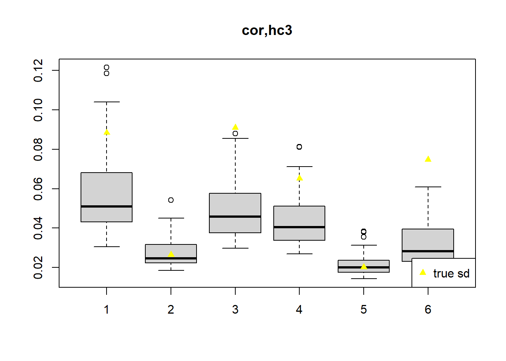

check coverage after adding weights, neuron real data
DongyueXie
2021-08-15
Last updated: 2021-08-19
Checks: 7 0
Knit directory: deconference/
This reproducible R Markdown analysis was created with workflowr (version 1.6.2). The Checks tab describes the reproducibility checks that were applied when the results were created. The Past versions tab lists the development history.
Great! Since the R Markdown file has been committed to the Git repository, you know the exact version of the code that produced these results.
Great job! The global environment was empty. Objects defined in the global environment can affect the analysis in your R Markdown file in unknown ways. For reproduciblity it’s best to always run the code in an empty environment.
The command set.seed(20200403) was run prior to running the code in the R Markdown file. Setting a seed ensures that any results that rely on randomness, e.g. subsampling or permutations, are reproducible.
Great job! Recording the operating system, R version, and package versions is critical for reproducibility.
Nice! There were no cached chunks for this analysis, so you can be confident that you successfully produced the results during this run.
Great job! Using relative paths to the files within your workflowr project makes it easier to run your code on other machines.
Great! You are using Git for version control. Tracking code development and connecting the code version to the results is critical for reproducibility.
The results in this page were generated with repository version d417853. See the Past versions tab to see a history of the changes made to the R Markdown and HTML files.
Note that you need to be careful to ensure that all relevant files for the analysis have been committed to Git prior to generating the results (you can use wflow_publish or wflow_git_commit). workflowr only checks the R Markdown file, but you know if there are other scripts or data files that it depends on. Below is the status of the Git repository when the results were generated:
Ignored files:
Ignored: .Rhistory
Ignored: .Rproj.user/
Untracked files:
Untracked: analysis/manuscript_simulation.Rmd
Untracked: analysis/manuscript_simulation_remove_outlier.Rmd
Untracked: code/simulation/simulation_manuscript.R
Untracked: code/simulation/simulation_manuscript_run.R
Untracked: code/simulation/simulation_manuscript_run_remove_outlier.R
Untracked: data/day30.h5
Untracked: data/day30.h5.zip
Untracked: data/neuron/
Untracked: data/pancreas/
Untracked: output/check_coverage_weight_neuron/
Untracked: output/check_coverage_weight_xin/
Untracked: output/geneCor_DABulk_cpm.rds
Untracked: output/geneCor_Epen1Bulk_cpm.rds
Untracked: output/geneCor_FPPBulk_cpm.rds
Untracked: output/geneCor_P_FPPBulk_cpm.rds
Untracked: output/geneCor_SertBulk_cpm.rds
Untracked: output/geneCor_U_NeurBulk_cpm.rds
Untracked: output/geneCor_gtexpancreas_tpm.rds
Untracked: output/geneCor_neuronBulk_cpm.rds
Untracked: output/manuscript/
Untracked: output/neuron/
Untracked: output/simu_correlation_betahat_d500_neuron.rds
Untracked: output/simu_correlation_checkavariance_betahat_d500_xin_est_cor_100bulkforcor_alpha05_addjack.rds
Untracked: output/simu_correlation_checkavariance_betahat_d500_xin_hc3.rds
Untracked: output/simu_correlation_checkavariance_betahat_d500_xin_hc3_only_pos_ecov.rds
Untracked: output/simu_correlation_checkavariance_betahat_d500_xin_jack.rds
Untracked: output/simu_correlation_checkavariance_betahat_d500_xin_trueb.rds
Untracked: output/simu_correlation_checkavariance_betahat_d50_xin_est_cor_100bulkforcor_alpha01.rds
Untracked: output/simu_correlation_checkavariance_betahat_d50_xin_est_cor_100bulkforcor_alpha05.rds
Untracked: output/simu_correlation_checkavariance_betahat_d50_xin_est_cor_100bulkforcor_alpha05_addjack.rds
Untracked: output/simu_correlation_checkavariance_betahat_d50_xin_est_cor_100bulkforcor_alpha05_addjack_weighted.rds
Untracked: output/simu_correlation_checkavariance_betahat_d50_xin_est_cor_100bulkforcor_thresh.rds
Untracked: output/simu_correlation_checkavariance_betahat_d50_xin_est_cor_100indi.rds
Untracked: output/simu_correlation_checkavariance_betahat_d50_xin_est_cor_100indi_alpha03.rds
Untracked: output/simu_correlation_checkavariance_betahat_d50_xin_est_cor_10indi.rds
Untracked: output/simu_correlation_checkavariance_betahat_d50_xin_est_cor_10indi_alpha03.rds
Untracked: renv.lock
Untracked: renv/
Unstaged changes:
Modified: .Rprofile
Modified: analysis/simu_correlation_checkvariance_real.Rmd
Modified: analysis/simu_correlation_est_cor.Rmd
Modified: code/deconference_estfunc.R
Modified: code/deconference_summary.R
Modified: code/simulation/get_cor_pairs.R
Modified: code/simulation/neuron/simu_neuron_result.R
Modified: code/simulation/simu_studyX.R
Note that any generated files, e.g. HTML, png, CSS, etc., are not included in this status report because it is ok for generated content to have uncommitted changes.
These are the previous versions of the repository in which changes were made to the R Markdown (analysis/check_coverage_adding_weights_neuron_real.Rmd) and HTML (docs/check_coverage_adding_weights_neuron_real.html) files. If you’ve configured a remote Git repository (see ?wflow_git_remote), click on the hyperlinks in the table below to view the files as they were in that past version.
| File | Version | Author | Date | Message |
|---|---|---|---|---|
| Rmd | d417853 | DongyueXie | 2021-08-19 | wflow_publish(“analysis/check_coverage_adding_weights_neuron_real.Rmd”) |
Introduction
In the neuron real data based simulation, the coverage is very low even after adjusting for correlations. The main reason seems to be the underestimate of the variance of \(\hat\beta\).
Here we try to use true \(\beta\) when calculating variance and also try to add all pairs.
indis_ref_filter = readRDS('data/neuron/indis_ref_12400by6by97.rds')source('code/deconference_main.R')
source('code/simulation/simu_correlation_ult.R')simu_neuron = function(indis_ref,
ref.idx,
b,
cor.idx,
calc_cov = T,
bulk_lib_size = 500,
groups = c(rep(1,ncol(b)/2),rep(2,ncol(b)/2)),
centeringXY=FALSE,
only.scale.pos.res = FALSE,
only.add.pos.res = FALSE,
verbose = F,
weighted = FALSE,
w = NULL,
eb.V = FALSE){
G = dim(indis_ref)[1]
K = dim(indis_ref)[2]
n_sub = dim(indis_ref)[3]
n_ref = length(ref.idx)
n_bulk = n_sub-n_ref
gene_names = dimnames(indis_ref)[[1]]
X_array_ref = indis_ref[,,ref.idx]
X_array_bulk = indis_ref[,,-ref.idx]
X = apply(X_array_ref,c(1,2),mean,na.rm=TRUE)
#browser()
if(eb.V){
#browser()
V.diag = t(apply(X_array_ref,c(1),function(z){diag(cov(t(z),use = 'complete.obs'))}))
V.diag.sd = apply(V.diag,2,function(z){vashr::vash(sqrt(z),df=n_ref-1)$sd.post})
V = matrix(nrow=G,ncol=K^2)
for (g in 1:G){
V[g,] = c(t(cor(t(X_array_ref[g,,]),use = 'complete.obs')*V.diag.sd[g,])*V.diag.sd[g,]/n_ref)
}
V[is.na(V)] = 0
}else{
V = t(apply(X_array_ref,c(1),function(z){(cov(t(z),use = 'complete.obs'))}))/n_ref
}
if(weighted){
if(is.null(w)){
# calc weights for each cell type, then average,
if(eb.V){
w = 1/(rowSums(V))
}else{
V.temp = t(apply(X_array_ref,c(1),function(z){(cov(t(z),use = 'complete.obs'))}))
fit.vash = vashr::vash(sqrt(rowSums(V.temp)),df=n_ref-1)
w = 1/(fit.vash$sd.post)^2
}
w = w/sum(w)*G
}
}else{
w = 1
}
# create bulk data
mb = lapply(1:n_bulk,function(i){X_array_bulk[,,i]%*%b[,i]})
mb = do.call(cbind,mb)
thetab = apply(mb,2,function(z){z/sum(z)})
true.beta = t(t(b)*c(apply(mb,2,function(z){bulk_lib_size*G/sum(z)})))
y = matrix(rpois(G*n_bulk,bulk_lib_size*G*thetab),nrow=G)
rownames(y) = gene_names
## ols
fit.ols = unadjusted_lm(y,X,w=w,groups = groups)
## adjust for measurement error, not for correlation
# fit.err.hc0 = estimation_func2(y=y,X=X,Vg=V,
# w=w,hc.type='hc0',correction=FALSE,
# calc_cov=calc_cov,verbose=verbose,
# cor.idx=NULL,
# centeringXY=centeringXY,
# true.beta = NULL,
# only.scale.pos.res=only.scale.pos.res,
# only.add.pos.res=only.add.pos.res)
fit.err.hc3 = estimation_func2(y=y,X=X,Vg=V,
w=w,hc.type='hc3',correction=FALSE,
calc_cov=calc_cov,verbose=verbose,
cor.idx=NULL,
centeringXY=centeringXY,
true.beta = NULL,
only.scale.pos.res=only.scale.pos.res,
only.add.pos.res=only.add.pos.res)
## adjust both measurement error and correlation
# fit.err.cor.hc0 = estimation_func2(y=y,X=X,Vg=V,
# w=w,hc.type='hc0',correction=FALSE,
# calc_cov=calc_cov,verbose=verbose,
# cor.idx=cor.idx,
# centeringXY=centeringXY,
# true.beta = NULL,
# only.scale.pos.res=only.scale.pos.res,
# only.add.pos.res=only.add.pos.res)
fit.err.cor.hc3 = estimation_func2(y=y,X=X,Vg=V,
w=w,hc.type='hc3',correction=FALSE,
calc_cov=calc_cov,verbose=verbose,
cor.idx=cor.idx,
centeringXY=centeringXY,
true.beta = NULL,
only.scale.pos.res=only.scale.pos.res,
only.add.pos.res=only.add.pos.res)
## adjust both measurement error and correlation, using true beta
fit.err.cor.hc3.true.beta = estimation_func2(y=y,X=X,Vg=V,
w=w,hc.type='hc3',correction=FALSE,
calc_cov=calc_cov,verbose=verbose,
cor.idx=cor.idx,
centeringXY=centeringXY,
true.beta = true.beta,
only.scale.pos.res=only.scale.pos.res,
only.add.pos.res=only.add.pos.res)
## adjust both measurement error and correlation, using true beta, use all pairs
fit.err.cor.hc3.true.beta.all.pairs = estimation_func2(y=y,X=X,Vg=V,
w=w,hc.type='hc3',correction=FALSE,
calc_cov=calc_cov,verbose=verbose,
cor.idx=cor.idx,
centeringXY=centeringXY,
true.beta = true.beta,
only.scale.pos.res=only.scale.pos.res,
only.add.pos.res=only.add.pos.res,
use_all_pair_for_cov = TRUE)
## adjust both measurement error and correlation, jackknife 10 folds
folds = kmeans(y,10,iter.max = 100,algorithm="MacQueen")$cluster
fit.err.cor.jack = estimation_func2(y=y,X=X,Vg=V,
w=w,hc.type='jackknife',correction=FALSE,
calc_cov=calc_cov,verbose=verbose,
cor.idx=cor.idx,
centeringXY=centeringXY,
true.beta = NULL,
only.scale.pos.res=only.scale.pos.res,
only.add.pos.res=only.add.pos.res,
folds=folds)
out = list(fit.ols=fit.ols,
fit.err.hc3=fit.err.hc3,
fit.err.cor.hc3=fit.err.cor.hc3,
fit.err.cor.hc3.true.beta=fit.err.cor.hc3.true.beta,
fit.err.cor.hc3.true.beta.all.pairs=fit.err.cor.hc3.true.beta.all.pairs,
fit.err.cor.jack=fit.err.cor.jack,
w=w,
input = list(ref.idx=ref.idx,b=b))
return(out)
}indis_ref_filter = readRDS('data/neuron/indis_ref_12400by6by97.rds')
b1 = c(0.1,0.1,0.15,0.15,0.2,0.3)
b2 = c(0.1,0.15,0.25,0.3,0.1,0.1)
n = dim(indis_ref_filter)[3]
n_ref = 11
n_bulk = n-n_ref
b = cbind(b1%*%t(rep(1,n_bulk/2)),b2%*%t(rep(1,n_bulk/2)))
## alpha = 0.05
cor.idx = readRDS('data/neuron/gene12400_cor_idx_alpha005.rds')
set.seed(12345)
out10 = list()
for(i in 1:5){
print(i)
ref.idx = sort(sample(1:n,n_ref))
out10[[i]] = simu_neuron(indis_ref_filter,ref.idx,b,cor.idx,
calc_cov = FALSE,verbose=F,weighted = TRUE,only.add.pos.res = F)
saveRDS(out10,file='output/neuron/neuron_simu_ref11_gene12400_weight_alpha005_check_coverage.rds')
}
set.seed(12345)
out10 = list()
for(i in 1:5){
print(i)
ref.idx = sort(sample(1:n,n_ref))
out10[[i]] = simu_neuron(indis_ref_filter,ref.idx,b,cor.idx,
calc_cov = FALSE,verbose=F,weighted = TRUE,only.add.pos.res = T)
saveRDS(out10,file='output/neuron/neuron_simu_ref11_gene12400_weight_alpha005_check_coverage_add_pos_res.rds')
}
## alpha = 0.5
cor.idx = readRDS('data/neuron/gene12400_cor_idx_alpha05.rds')
set.seed(12345)
out10 = list()
for(i in 1:5){
print(i)
ref.idx = sort(sample(1:n,n_ref))
out10[[i]] = simu_neuron(indis_ref_filter,ref.idx,b,cor.idx,
calc_cov = FALSE,verbose=F,weighted = TRUE,only.add.pos.res = F)
saveRDS(out10,file='output/neuron/neuron_simu_ref11_gene12400_weight_alpha05_check_coverage.rds')
}
# set.seed(12345)
# out10 = list()
# for(i in 1:5){
# print(i)
# ref.idx = sort(sample(1:n,n_ref))
# out10[[i]] = simu_neuron(indis_ref_filter,ref.idx,b,cor.idx,
# calc_cov = FALSE,verbose=F,weighted = TRUE,only.add.pos.res = T)
# saveRDS(out10,file='output/neuron/neuron_simu_ref11_gene12400_weight_alpha05_check_coverage_add_pos_res.rds')
# } rmse = function(x,y){sqrt(mean((x-y)^2))}
summary_temp = function(out,out.music=NULL){
rmse_ols = c()
rmse_err = c()
rmse_music = c()
coverage = c()
median_std = c()
wald= list()
for(i in 1:length(out)){
rmse_ols[i]=rmse(out[[i]]$fit.ols$beta_hat,out[[i]]$input$b)
rmse_err[i] = rmse(out[[i]]$fit.err.hc3$beta_hat,out[[i]]$input$b)
if(!is.null(out.music)){
rmse_music[i] = rmse(out.music[[i]],out[[i]]$input$b)
}
waldi = list()
waldi[[1]] = (out[[i]]$fit.ols$beta_hat-out[[i]]$input$b)/out[[i]]$fit.ols$ols.out$beta_se
waldi[[2]] = (out[[i]]$fit.ols$beta_hat-out[[i]]$input$b)/out[[i]]$fit.ols$sand.out$beta_se
waldi[[3]] = (out[[i]]$fit.ols$beta_hat-out[[i]]$input$b)/out[[i]]$fit.ols$sand.out.hc3$beta_se
waldi = c(waldi,lapply(2:6,function(j){(out[[i]][[j]]$beta_hat-out[[i]]$input$b)/out[[i]][[j]]$beta_se}))
wald[[i]] = waldi
coverage = rbind(coverage,unlist(lapply(waldi,function(z){mean(abs(z)<=1.96,na.rm = T)})))
median_std = rbind(median_std,c(median(c(out[[i]]$fit.ols$ols.out$beta_se)),
median(c(out[[i]]$fit.ols$sand.out$beta_se)),
median(c(out[[i]]$fit.ols$sand.out.hc3$beta_se)),
unlist(lapply(2:6,function(j){median(c(out[[i]][[j]]$beta_se),na.rm = T)}))))
}
colnames(coverage) = c('ols.cv','ols.hc0','ols.hc3','err.hc3','err.cor.hc3','err.cor.hc3.true.beta','err.cor.hc3.true.beta.all.pairs','err.cor.jack')
colnames(median_std) = c('ols.cv','ols.hc0','ols.hc3','err.hc3','err.cor.hc3','err.cor.hc3.true.beta','err.cor.hc3.true.beta.all.pairs','err.cor.jack')
return(list(rmse_ols=round(rmse_ols,4),
rmse_err=round(rmse_err,4),
rmse_music=(rmse_music),
coverage=round(coverage,4),
median_std=round(median_std,4)))
}cor alpha 0.05
out = readRDS('output/neuron/neuron_simu_ref11_gene12400_weight_alpha005_check_coverage.rds')
summary_temp(out)$rmse_ols
[1] 0.0674 0.0759 0.0588 0.0674 0.0717
$rmse_err
[1] 0.0721 0.0803 0.0698 0.0691 0.0727
$rmse_music
NULL
$coverage
ols.cv ols.hc0 ols.hc3 err.hc3 err.cor.hc3 err.cor.hc3.true.beta
[1,] 0.1802 0.2035 0.2093 0.2326 0.4709 0.9922
[2,] 0.1764 0.1764 0.1609 0.1938 0.4388 0.9767
[3,] 0.1647 0.1919 0.1628 0.2190 0.5437 0.9903
[4,] 0.1512 0.1860 0.1705 0.1977 0.5243 0.9981
[5,] 0.1531 0.1667 0.1589 0.2093 0.4330 0.9903
err.cor.hc3.true.beta.all.pairs err.cor.jack
[1,] 0.9942 0.5272
[2,] 0.9942 0.4630
[3,] 0.9903 0.5825
[4,] 1.0000 0.6070
[5,] 0.9981 0.4932
$median_std
ols.cv ols.hc0 ols.hc3 err.hc3 err.cor.hc3 err.cor.hc3.true.beta
[1,] 0.0058 0.0067 0.0068 0.0082 0.0201 0.0472
[2,] 0.0061 0.0068 0.0063 0.0079 0.0186 0.0478
[3,] 0.0056 0.0070 0.0062 0.0087 0.0215 0.0435
[4,] 0.0057 0.0068 0.0063 0.0091 0.0233 0.0521
[5,] 0.0054 0.0066 0.0063 0.0082 0.0189 0.0448
err.cor.hc3.true.beta.all.pairs err.cor.jack
[1,] 0.0397 0.0223
[2,] 0.0443 0.0195
[3,] 0.0372 0.0223
[4,] 0.0377 0.0258
[5,] 0.0368 0.0205Look at estimated sd v.s. true sd
boxplot(t(out[[1]]$fit.err.cor.hc3$beta_se[,1:43]),ylim = range(c(out[[1]]$fit.err.cor.hc3$beta_se[,1:43],apply(out[[1]]$fit.err.cor.hc3$beta_hat[,1:43],1,sd))),
main = 'cor,hc3')
lines(apply(out[[1]]$fit.err.cor.hc3$beta_hat[,1:43],1,sd),type='p',col='yellow',pch=17)
legend('bottomright',c('true sd'),pch=17,col='yellow')boxplot(t(out[[1]]$fit.err.cor.hc3.true.beta$beta_se[,1:43]),ylim = range(c(out[[1]]$fit.err.cor.hc3.true.beta$beta_se[,1:43],apply(out[[1]]$fit.err.cor.hc3.true.beta$beta_hat[,1:43],1,sd))),
main = 'cor,hc3,true beta')
lines(apply(out[[1]]$fit.err.cor.hc3.true.beta$beta_hat[,1:43],1,sd),type='p',col='yellow',pch=17)
legend('bottomright',c('true sd'),pch=17,col='yellow')boxplot(t(out[[1]]$fit.err.cor.hc3.true.beta.all.pairs$beta_se[,1:43]),ylim = range(c(out[[1]]$fit.err.cor.hc3.true.beta.all.pairs$beta_se[,1:43],apply(out[[1]]$fit.err.cor.hc3.true.beta.all.pairs$beta_hat[,1:43],1,sd))),
main = 'cor,hc3,true beta, all pairs')
lines(apply(out[[1]]$fit.err.cor.hc3.true.beta.all.pairs$beta_hat[,1:43],1,sd),type='p',col='yellow',pch=17)
legend('bottomright',c('true sd'),pch=17,col='yellow')
boxplot(t(out[[1]]$fit.err.cor.jack$beta_se[,1:43]),ylim = range(c(out[[1]]$fit.err.cor.jack$beta_se[,1:43],apply(out[[1]]$fit.err.cor.jack$beta_hat[,1:43],1,sd,na.rm=T)),na.rm = T),
main = 'cor,cross validation')
lines(apply(out[[1]]$fit.err.cor.jack$beta_hat[,1:43],1,sd),type='p',col='yellow',pch=17)
legend('bottomright',c('true sd'),pch=17,col='yellow')Take a look at the confidence interval when using true beta
idx = 1:43
round(pmax(out[[1]]$fit.err.cor.hc3.true.beta$beta_hat[,idx] - 2*out[[1]]$fit.err.cor.hc3.true.beta$beta_se[,idx],0),3) [,1] [,2] [,3] [,4] [,5] [,6] [,7] [,8] [,9] [,10] [,11] [,12]
[1,] 0.009 0.000 0.006 0.000 0.036 0.000 0.000 0.000 0.000 0.000 0.000 0.000
[2,] 0.042 0.035 0.088 0.074 0.000 0.010 0.000 0.059 0.030 0.035 0.038 0.013
[3,] 0.040 0.051 0.085 0.119 0.000 0.000 0.000 0.000 0.000 0.053 0.000 0.077
[4,] 0.086 0.000 0.000 0.110 0.083 0.000 0.073 0.088 0.000 0.000 0.001 0.000
[5,] 0.151 0.162 0.146 0.165 0.191 0.175 0.165 0.153 0.057 0.180 0.161 0.171
[6,] 0.258 0.078 0.011 0.278 0.270 0.076 0.149 0.208 0.214 0.188 0.239 0.163
[,13] [,14] [,15] [,16] [,17] [,18] [,19] [,20] [,21] [,22] [,23] [,24]
[1,] 0.013 0.010 0.000 0.033 0.018 0.043 0.000 0.000 0.028 0.030 0.000 0.000
[2,] 0.060 0.067 0.000 0.007 0.000 0.023 0.069 0.074 0.100 0.064 0.051 0.061
[3,] 0.000 0.040 0.000 0.000 0.000 0.084 0.000 0.036 0.000 0.000 0.000 0.029
[4,] 0.026 0.028 0.053 0.110 0.050 0.000 0.014 0.015 0.000 0.112 0.076 0.092
[5,] 0.181 0.175 0.121 0.173 0.189 0.198 0.125 0.165 0.132 0.175 0.174 0.163
[6,] 0.192 0.279 0.244 0.266 0.278 0.234 0.233 0.160 0.059 0.264 0.257 0.244
[,25] [,26] [,27] [,28] [,29] [,30] [,31] [,32] [,33] [,34] [,35] [,36]
[1,] 0.016 0.000 0.000 0.000 0.024 0.000 0.026 0.000 0.000 0.000 0.000 0.000
[2,] 0.079 0.052 0.085 0.000 0.012 0.000 0.070 0.024 0.000 0.014 0.078 0.031
[3,] 0.078 0.032 0.086 0.000 0.000 0.000 0.000 0.000 0.000 0.000 0.000 0.000
[4,] 0.000 0.076 0.000 0.075 0.052 0.073 0.074 0.075 0.082 0.067 0.013 0.079
[5,] 0.189 0.143 0.196 0.181 0.196 0.186 0.172 0.164 0.101 0.125 0.176 0.154
[6,] 0.262 0.255 0.296 0.283 0.274 0.279 0.268 0.227 0.216 0.258 0.241 0.253
[,37] [,38] [,39] [,40] [,41] [,42] [,43]
[1,] 0.000 0.057 0.006 0.000 0.000 0.014 0.000
[2,] 0.065 0.075 0.016 0.000 0.064 0.000 0.069
[3,] 0.105 0.095 0.000 0.000 0.000 0.069 0.116
[4,] 0.006 0.000 0.091 0.010 0.000 0.037 0.099
[5,] 0.166 0.175 0.115 0.156 0.180 0.190 0.158
[6,] 0.273 0.284 0.220 0.263 0.236 0.219 0.263round(pmin(out[[1]]$fit.err.cor.hc3.true.beta$beta_hat[,idx] + 2*out[[1]]$fit.err.cor.hc3.true.beta$beta_se[,idx],1),3) [,1] [,2] [,3] [,4] [,5] [,6] [,7] [,8] [,9] [,10] [,11] [,12]
[1,] 0.207 0.168 0.499 0.135 0.247 0.765 0.482 0.377 0.667 0.279 0.252 0.408
[2,] 0.127 0.110 0.119 0.122 0.113 0.121 0.127 0.107 0.131 0.109 0.117 0.110
[3,] 0.225 0.766 0.378 0.215 0.216 0.318 0.239 0.206 0.324 0.491 0.265 0.320
[4,] 0.254 0.295 0.213 0.253 0.352 0.270 0.279 0.272 0.335 0.231 0.313 0.207
[5,] 0.219 0.212 0.229 0.204 0.220 0.226 0.221 0.261 0.228 0.239 0.217 0.213
[6,] 0.384 0.343 0.339 0.458 0.453 0.391 0.314 0.371 0.492 0.338 0.672 0.352
[,13] [,14] [,15] [,16] [,17] [,18] [,19] [,20] [,21] [,22] [,23] [,24]
[1,] 0.551 0.247 0.176 0.244 0.192 0.217 0.318 0.390 0.417 0.205 0.138 0.165
[2,] 0.099 0.149 0.131 0.119 0.126 0.125 0.139 0.128 0.211 0.132 0.106 0.131
[3,] 0.187 0.208 0.249 0.178 0.253 0.448 0.266 0.245 0.307 0.196 0.222 0.201
[4,] 0.249 0.200 0.452 0.315 0.380 0.174 0.298 0.231 0.295 0.240 0.337 0.220
[5,] 0.266 0.210 0.220 0.236 0.220 0.251 0.212 0.232 0.266 0.232 0.241 0.239
[6,] 0.307 0.387 0.695 0.334 0.580 0.352 0.524 0.332 0.331 0.362 0.600 0.620
[,25] [,26] [,27] [,28] [,29] [,30] [,31] [,32] [,33] [,34] [,35] [,36]
[1,] 0.309 0.150 0.121 0.118 0.363 0.125 0.325 0.207 0.378 0.285 0.477 0.162
[2,] 0.149 0.145 0.125 0.130 0.121 0.127 0.106 0.097 0.126 0.124 0.124 0.200
[3,] 0.217 0.237 0.483 0.196 0.206 0.208 0.210 0.214 0.248 0.242 0.225 0.254
[4,] 0.203 0.454 0.198 0.408 0.230 0.422 0.285 0.380 0.263 0.259 0.244 0.467
[5,] 0.244 0.208 0.228 0.226 0.231 0.246 0.231 0.208 0.221 0.214 0.238 0.226
[6,] 0.351 0.351 0.404 0.602 0.352 0.656 0.383 0.661 0.377 0.427 0.362 0.455
[,37] [,38] [,39] [,40] [,41] [,42] [,43]
[1,] 0.139 0.217 0.405 0.243 0.299 0.314 0.158
[2,] 0.176 0.177 0.123 0.120 0.146 0.140 0.120
[3,] 0.376 0.226 0.227 0.222 0.296 0.315 0.228
[4,] 0.214 0.200 0.408 0.286 0.383 0.200 0.277
[5,] 0.202 0.208 0.210 0.353 0.261 0.233 0.202
[6,] 0.417 0.318 0.374 0.505 0.482 0.314 0.469Look at J
out[[1]]$fit.err.cor.hc3$J[1:6,1:6]*1e4 [,1] [,2] [,3] [,4] [,5] [,6]
[1,] 42.010435 -5.073767 -5.073767 -5.073767 -5.073767 -5.073767
[2,] -3.984703 43.099500 -3.984703 -3.984703 -3.984703 -3.984703
[3,] -6.222436 -6.222436 40.861766 -6.222436 -6.222436 -6.222436
[4,] -8.012398 -8.012398 -8.012398 39.071805 -8.012398 -8.012398
[5,] -8.690337 -8.690337 -8.690337 -8.690337 38.393865 -8.690337
[6,] -15.100562 -15.100562 -15.100562 -15.100562 -15.100562 31.983641out[[1]]$fit.err.cor.hc3.true.beta$J[1:6,1:6]*1e4 [,1] [,2] [,3] [,4] [,5] [,6]
[1,] 42.550347 -4.727816 -4.727816 -4.727816 -4.727816 -4.727816
[2,] -4.727816 42.550347 -4.727816 -4.727816 -4.727816 -4.727816
[3,] -7.091724 -7.091724 40.186438 -7.091724 -7.091724 -7.091724
[4,] -7.091724 -7.091724 -7.091724 40.186438 -7.091724 -7.091724
[5,] -9.455633 -9.455633 -9.455633 -9.455633 37.822530 -9.455633
[6,] -14.183449 -14.183449 -14.183449 -14.183449 -14.183449 33.094714Look at Sigma(variance of \(X^Ty\))
out[[1]]$fit.err.cor.hc3$Sigma[1:6,1:6]/1e4 [,1] [,2] [,3] [,4] [,5] [,6]
[1,] 6979.448 4159.619 4873.424 4447.055 4766.475 6679.773
[2,] 4159.619 6590.587 4973.807 5817.395 6157.280 4593.448
[3,] 4873.424 4973.807 5145.368 4903.944 5479.939 4926.881
[4,] 4447.055 5817.395 4903.944 5423.586 5867.767 4758.728
[5,] 4766.475 6157.280 5479.939 5867.767 6709.775 5105.490
[6,] 6679.773 4593.448 4926.881 4758.728 5105.490 6563.749out[[1]]$fit.err.cor.hc3.true.beta$Sigma[1:6,1:6]/1e4 [,1] [,2] [,3] [,4] [,5] [,6]
[1,] 8439.272 3360.721 5066.001 4589.414 4450.674 8009.729
[2,] 3360.721 6562.052 4498.990 5438.410 6033.992 3803.629
[3,] 5066.001 4498.990 4960.259 4743.003 5355.033 5084.057
[4,] 4589.414 5438.410 4743.003 5283.900 5808.796 4880.965
[5,] 4450.674 6033.992 5355.033 5808.796 7247.371 4870.499
[6,] 8009.729 3803.629 5084.057 4880.965 4870.499 7789.246round(out[[1]]$fit.err.cor.hc3.true.beta$Sigma[1:6,1:6] / out[[1]]$fit.err.cor.hc3$Sigma[1:6,1:6],3) [,1] [,2] [,3] [,4] [,5] [,6]
[1,] 1.209 0.808 1.040 1.032 0.934 1.199
[2,] 0.808 0.996 0.905 0.935 0.980 0.828
[3,] 1.040 0.905 0.964 0.967 0.977 1.032
[4,] 1.032 0.935 0.967 0.974 0.990 1.026
[5,] 0.934 0.980 0.977 0.990 1.080 0.954
[6,] 1.199 0.828 1.032 1.026 0.954 1.187Look at variance of \(\hat\beta\).
out[[1]]$fit.err.cor.hc3$cov_beta_tilde_hat[1:6,1:6] [,1] [,2] [,3] [,4] [,5] [,6]
[1,] 92.042061 -5.088100 -22.654670 -44.2753922 -6.4010352 -15.9816228
[2,] -5.088100 6.364794 -4.553370 5.3051985 -1.4921450 -2.6401589
[3,] -22.654670 -4.553370 88.109022 -40.4173071 3.6841427 -23.0924442
[4,] -44.275392 5.305198 -40.417307 78.5883690 0.4565953 10.7175917
[5,] -6.401035 -1.492145 3.684143 0.4565953 4.7807446 0.1757846
[6,] -15.981623 -2.640159 -23.092444 10.7175917 0.1757846 37.5117035out[[1]]$fit.err.cor.hc3.true.beta$cov_beta_tilde_hat[1:6,1:6] [,1] [,2] [,3] [,4] [,5] [,6]
[1,] 110.23973 -12.993695 -30.836132 -35.153721 -17.684887 -11.388716
[2,] -12.99369 18.948795 3.710732 -3.146676 1.839117 -14.492546
[3,] -30.83613 3.710732 94.114173 -47.327629 9.509458 -32.920809
[4,] -35.15372 -3.146676 -47.327629 82.538236 -4.451811 20.709613
[5,] -17.68489 1.839117 9.509458 -4.451811 12.454111 -1.239016
[6,] -11.38872 -14.492546 -32.920809 20.709613 -1.239016 48.859070Look at \(\hat\beta\) and true \(\beta\).
indis_ref_filter = readRDS('data/neuron/indis_ref_12400by6by97.rds')
b1 = c(0.1,0.1,0.15,0.15,0.2,0.3)
b2 = c(0.1,0.15,0.25,0.3,0.1,0.1)
G = dim(indis_ref_filter)[1]
n = dim(indis_ref_filter)[3]
n_ref = 11
n_bulk = n-n_ref
b = cbind(b1%*%t(rep(1,n_bulk/2)),b2%*%t(rep(1,n_bulk/2)))
set.seed(12345)
ref.idx = sort(sample(1:n,n_ref))
X_array_bulk = indis_ref_filter[,,-ref.idx]
mb = lapply(1:n_bulk,function(i){X_array_bulk[,,i]%*%b[,i]})
mb = do.call(cbind,mb)
true.beta = t(t(b)*c(apply(mb,2,function(z){500*G/sum(z)})))
out[[1]]$fit.err.cor.hc3.true.beta$beta_tilde_hat[,1:5] [,1] [,2] [,3] [,4] [,5]
[1,] 22.88654 3.186043 55.19058 0.3947573 30.787359
[2,] 17.97403 15.765109 22.71428 21.3274144 11.619829
[3,] 28.06790 89.140683 50.64026 36.3785097 4.493004
[4,] 36.14199 23.357609 10.88308 39.5425347 47.328047
[5,] 39.20001 40.805138 40.94971 40.2058676 44.754847
[6,] 68.11499 45.956438 38.29282 80.2814970 78.706069true.beta[,1:5] [,1] [,2] [,3] [,4] [,5]
[1,] 21.15141 21.06614 21.29144 21.05021 20.96703
[2,] 21.15141 21.06614 21.29144 21.05021 20.96703
[3,] 31.72712 31.59922 31.93715 31.57532 31.45054
[4,] 31.72712 31.59922 31.93715 31.57532 31.45054
[5,] 42.30283 42.13229 42.58287 42.10043 41.93406
[6,] 63.45424 63.19843 63.87431 63.15064 62.90108cor alpha 0.05, add pos res
out = readRDS('output/neuron/neuron_simu_ref11_gene12400_weight_alpha005_check_coverage_add_pos_res.rds')
summary_temp(out)$rmse_ols
[1] 0.0674 0.0759 0.0588 0.0674 0.0717
$rmse_err
[1] 0.0721 0.0803 0.0698 0.0691 0.0727
$rmse_music
NULL
$coverage
ols.cv ols.hc0 ols.hc3 err.hc3 err.cor.hc3 err.cor.hc3.true.beta
[1,] 0.1802 0.2035 0.2093 0.2326 0.7461 0.9864
[2,] 0.1764 0.1764 0.1609 0.1938 0.7578 0.9787
[3,] 0.1647 0.1919 0.1628 0.2190 0.8295 0.9942
[4,] 0.1512 0.1860 0.1705 0.1977 0.8198 0.9864
[5,] 0.1531 0.1667 0.1589 0.2093 0.7519 0.9864
err.cor.hc3.true.beta.all.pairs err.cor.jack
[1,] 0.9942 0.7636
[2,] 0.9942 0.7597
[3,] 0.9903 0.8391
[4,] 1.0000 0.8372
[5,] 0.9981 0.7733
$median_std
ols.cv ols.hc0 ols.hc3 err.hc3 err.cor.hc3 err.cor.hc3.true.beta
[1,] 0.0058 0.0067 0.0068 0.0082 0.0348 0.0523
[2,] 0.0061 0.0068 0.0063 0.0079 0.0369 0.0525
[3,] 0.0056 0.0070 0.0062 0.0087 0.0410 0.0535
[4,] 0.0057 0.0068 0.0063 0.0091 0.0394 0.0588
[5,] 0.0054 0.0066 0.0063 0.0082 0.0372 0.0523
err.cor.hc3.true.beta.all.pairs err.cor.jack
[1,] 0.0397 0.0358
[2,] 0.0443 0.0375
[3,] 0.0372 0.0417
[4,] 0.0377 0.0404
[5,] 0.0368 0.0384Look at estimated sd v.s. true sd
boxplot(t(out[[1]]$fit.err.cor.hc3$beta_se[,1:43]),ylim = range(c(out[[1]]$fit.err.cor.hc3$beta_se[,1:43],apply(out[[1]]$fit.err.cor.hc3$beta_hat[,1:43],1,sd))),
main = 'cor,hc3')
lines(apply(out[[1]]$fit.err.cor.hc3$beta_hat[,1:43],1,sd),type='p',col='yellow',pch=17)
legend('bottomright',c('true sd'),pch=17,col='yellow')
boxplot(t(out[[1]]$fit.err.cor.hc3.true.beta$beta_se[,1:43]),ylim = range(c(out[[1]]$fit.err.cor.hc3.true.beta$beta_se[,1:43],apply(out[[1]]$fit.err.cor.hc3.true.beta$beta_hat[,1:43],1,sd))),
main = 'cor,hc3,true beta')
lines(apply(out[[1]]$fit.err.cor.hc3.true.beta$beta_hat[,1:43],1,sd),type='p',col='yellow',pch=17)
legend('bottomright',c('true sd'),pch=17,col='yellow')boxplot(t(out[[1]]$fit.err.cor.hc3.true.beta.all.pairs$beta_se[,1:43]),ylim = range(c(out[[1]]$fit.err.cor.hc3.true.beta.all.pairs$beta_se[,1:43],apply(out[[1]]$fit.err.cor.hc3.true.beta.all.pairs$beta_hat[,1:43],1,sd))),
main = 'cor,hc3,true beta, all pairs')
lines(apply(out[[1]]$fit.err.cor.hc3.true.beta.all.pairs$beta_hat[,1:43],1,sd),type='p',col='yellow',pch=17)
legend('bottomright',c('true sd'),pch=17,col='yellow')boxplot(t(out[[1]]$fit.err.cor.jack$beta_se[,1:43]),ylim = range(c(out[[1]]$fit.err.cor.jack$beta_se[,1:43],apply(out[[1]]$fit.err.cor.jack$beta_hat[,1:43],1,sd,na.rm=T)),na.rm = T),
main = 'cor,cross validation')
lines(apply(out[[1]]$fit.err.cor.jack$beta_hat[,1:43],1,sd),type='p',col='yellow',pch=17)
legend('bottomright',c('true sd'),pch=17,col='yellow')Take a look at the confidence interval when using true beta
idx = 1:43
round(pmax(out[[1]]$fit.err.cor.hc3.true.beta$beta_hat[,idx] - 2*out[[1]]$fit.err.cor.hc3.true.beta$beta_se[,idx],0),3) [,1] [,2] [,3] [,4] [,5] [,6] [,7] [,8] [,9] [,10] [,11] [,12]
[1,] 0.000 0.000 0.023 0.000 0.024 0.000 0.000 0.003 0.000 0.000 0.000 0.000
[2,] 0.007 0.003 0.045 0.055 0.000 0.000 0.000 0.028 0.000 0.013 0.009 0.000
[3,] 0.000 0.115 0.081 0.100 0.000 0.000 0.000 0.000 0.000 0.071 0.000 0.066
[4,] 0.053 0.000 0.000 0.110 0.101 0.000 0.052 0.074 0.000 0.000 0.012 0.000
[5,] 0.119 0.140 0.125 0.151 0.163 0.121 0.133 0.141 0.039 0.165 0.139 0.148
[6,] 0.234 0.103 0.047 0.298 0.284 0.070 0.141 0.206 0.207 0.191 0.279 0.172
[,13] [,14] [,15] [,16] [,17] [,18] [,19] [,20] [,21] [,22] [,23] [,24]
[1,] 0.042 0.000 0.000 0.021 0.000 0.020 0.000 0.004 0.005 0.009 0.000 0.000
[2,] 0.029 0.037 0.000 0.002 0.000 0.009 0.031 0.048 0.056 0.044 0.033 0.041
[3,] 0.000 0.000 0.000 0.000 0.000 0.109 0.000 0.019 0.000 0.000 0.000 0.020
[4,] 0.010 0.000 0.086 0.119 0.061 0.000 0.014 0.017 0.000 0.100 0.093 0.075
[5,] 0.164 0.143 0.110 0.163 0.160 0.182 0.107 0.151 0.114 0.166 0.164 0.151
[6,] 0.183 0.268 0.285 0.253 0.309 0.239 0.246 0.169 0.071 0.254 0.292 0.284
[,25] [,26] [,27] [,28] [,29] [,30] [,31] [,32] [,33] [,34] [,35] [,36]
[1,] 0.019 0.000 0.000 0.000 0.039 0.000 0.033 0.000 0.000 0.000 0.010 0.000
[2,] 0.060 0.033 0.060 0.000 0.006 0.000 0.044 0.009 0.000 0.000 0.041 0.023
[3,] 0.060 0.010 0.118 0.000 0.000 0.000 0.000 0.000 0.000 0.000 0.000 0.000
[4,] 0.000 0.104 0.000 0.104 0.049 0.106 0.081 0.099 0.052 0.048 0.007 0.112
[5,] 0.176 0.124 0.182 0.161 0.179 0.170 0.157 0.145 0.091 0.110 0.149 0.142
[6,] 0.247 0.232 0.298 0.317 0.270 0.322 0.271 0.282 0.202 0.249 0.236 0.255
[,37] [,38] [,39] [,40] [,41] [,42] [,43]
[1,] 0.000 0.017 0.005 0.000 0.000 0.004 0.000
[2,] 0.055 0.055 0.000 0.000 0.037 0.000 0.043
[3,] 0.116 0.062 0.000 0.000 0.000 0.058 0.086
[4,] 0.006 0.000 0.109 0.008 0.005 0.006 0.098
[5,] 0.147 0.153 0.099 0.149 0.157 0.171 0.139
[6,] 0.274 0.246 0.214 0.270 0.252 0.202 0.280round(pmin(out[[1]]$fit.err.cor.hc3.true.beta$beta_hat[,idx] + 2*out[[1]]$fit.err.cor.hc3.true.beta$beta_se[,idx],1),3) [,1] [,2] [,3] [,4] [,5] [,6] [,7] [,8] [,9] [,10] [,11] [,12]
[1,] 0.249 0.176 0.481 0.113 0.259 0.741 0.481 0.372 0.655 0.291 0.280 0.390
[2,] 0.162 0.142 0.163 0.140 0.113 0.151 0.141 0.138 0.178 0.131 0.146 0.124
[3,] 0.267 0.702 0.382 0.234 0.185 0.325 0.264 0.200 0.318 0.473 0.226 0.331
[4,] 0.287 0.281 0.211 0.252 0.334 0.286 0.301 0.286 0.335 0.219 0.302 0.217
[5,] 0.250 0.234 0.249 0.218 0.248 0.281 0.253 0.274 0.246 0.254 0.239 0.236
[6,] 0.407 0.318 0.304 0.438 0.439 0.398 0.322 0.373 0.500 0.335 0.632 0.343
[,13] [,14] [,15] [,16] [,17] [,18] [,19] [,20] [,21] [,22] [,23] [,24]
[1,] 0.523 0.298 0.192 0.256 0.228 0.240 0.333 0.378 0.441 0.226 0.146 0.138
[2,] 0.129 0.179 0.127 0.124 0.138 0.139 0.177 0.155 0.256 0.152 0.124 0.152
[3,] 0.182 0.254 0.210 0.186 0.223 0.423 0.232 0.262 0.326 0.198 0.197 0.210
[4,] 0.266 0.234 0.419 0.306 0.368 0.157 0.298 0.229 0.289 0.252 0.320 0.237
[5,] 0.282 0.242 0.231 0.246 0.249 0.267 0.229 0.246 0.283 0.241 0.252 0.251
[6,] 0.315 0.398 0.654 0.346 0.549 0.347 0.511 0.323 0.319 0.372 0.566 0.580
[,25] [,26] [,27] [,28] [,29] [,30] [,31] [,32] [,33] [,34] [,35] [,36]
[1,] 0.306 0.158 0.116 0.125 0.348 0.126 0.318 0.168 0.378 0.299 0.454 0.185
[2,] 0.169 0.164 0.151 0.129 0.127 0.114 0.132 0.111 0.146 0.150 0.161 0.208
[3,] 0.235 0.258 0.450 0.191 0.193 0.185 0.181 0.206 0.267 0.256 0.205 0.213
[4,] 0.177 0.426 0.177 0.378 0.233 0.389 0.279 0.356 0.293 0.279 0.250 0.434
[5,] 0.257 0.228 0.242 0.246 0.247 0.263 0.246 0.227 0.231 0.229 0.265 0.238
[6,] 0.366 0.374 0.403 0.568 0.357 0.614 0.380 0.607 0.390 0.437 0.366 0.453
[,37] [,38] [,39] [,40] [,41] [,42] [,43]
[1,] 0.129 0.258 0.406 0.254 0.300 0.323 0.134
[2,] 0.186 0.196 0.146 0.132 0.174 0.146 0.146
[3,] 0.365 0.259 0.206 0.234 0.253 0.326 0.258
[4,] 0.215 0.200 0.390 0.288 0.354 0.231 0.278
[5,] 0.220 0.230 0.226 0.361 0.283 0.252 0.220
[6,] 0.417 0.357 0.380 0.498 0.465 0.331 0.452cor alpha 0.5
out = readRDS('output/neuron/neuron_simu_ref11_gene12400_weight_alpha05_check_coverage.rds')
summary_temp(out)$rmse_ols
[1] 0.0674 0.0759 0.0588 0.0674 0.0717
$rmse_err
[1] 0.0721 0.0803 0.0698 0.0691 0.0727
$rmse_music
NULL
$coverage
ols.cv ols.hc0 ols.hc3 err.hc3 err.cor.hc3 err.cor.hc3.true.beta
[1,] 0.1802 0.2035 0.2093 0.2326 0.4252 1.0000
[2,] 0.1764 0.1764 0.1609 0.1938 0.4143 1.0000
[3,] 0.1647 0.1919 0.1628 0.2190 0.4922 0.9961
[4,] 0.1512 0.1860 0.1705 0.1977 0.4755 1.0000
[5,] 0.1531 0.1667 0.1589 0.2093 0.4198 1.0000
err.cor.hc3.true.beta.all.pairs err.cor.jack
[1,] 0.9942 0.5175
[2,] 0.9942 0.4407
[3,] 0.9903 0.5536
[4,] 1.0000 0.5748
[5,] 0.9981 0.4980
$median_std
ols.cv ols.hc0 ols.hc3 err.hc3 err.cor.hc3 err.cor.hc3.true.beta
[1,] 0.0058 0.0067 0.0068 0.0082 0.0173 0.0494
[2,] 0.0061 0.0068 0.0063 0.0079 0.0161 0.0532
[3,] 0.0056 0.0070 0.0062 0.0087 0.0183 0.0442
[4,] 0.0057 0.0068 0.0063 0.0091 0.0208 0.0522
[5,] 0.0054 0.0066 0.0063 0.0082 0.0170 0.0466
err.cor.hc3.true.beta.all.pairs err.cor.jack
[1,] 0.0397 0.0205
[2,] 0.0443 0.0175
[3,] 0.0372 0.0201
[4,] 0.0377 0.0245
[5,] 0.0368 0.0199Look at estimated sd v.s. true sd
boxplot(t(out[[1]]$fit.err.cor.hc3$beta_se[,1:43]),ylim = range(c(out[[1]]$fit.err.cor.hc3$beta_se[,1:43],apply(out[[1]]$fit.err.cor.hc3$beta_hat[,1:43],1,sd,na.rm=T)),na.rm = T),
main = 'cor,hc3')
lines(apply(out[[1]]$fit.err.cor.hc3$beta_hat[,1:43],1,sd),type='p',col='yellow',pch=17)
legend('bottomright',c('true sd'),pch=17,col='yellow')boxplot(t(out[[1]]$fit.err.cor.hc3.true.beta$beta_se[,1:43]),ylim = range(c(out[[1]]$fit.err.cor.hc3.true.beta$beta_se[,1:43],apply(out[[1]]$fit.err.cor.hc3.true.beta$beta_hat[,1:43],1,sd))),
main = 'cor,hc3,true beta')
lines(apply(out[[1]]$fit.err.cor.hc3.true.beta$beta_hat[,1:43],1,sd),type='p',col='yellow',pch=17)
legend('bottomright',c('true sd'),pch=17,col='yellow')boxplot(t(out[[1]]$fit.err.cor.hc3.true.beta.all.pairs$beta_se[,1:43]),ylim = range(c(out[[1]]$fit.err.cor.hc3.true.beta.all.pairs$beta_se[,1:43],apply(out[[1]]$fit.err.cor.hc3.true.beta.all.pairs$beta_hat[,1:43],1,sd))),
main = 'cor,hc3,true beta, all pairs')
lines(apply(out[[1]]$fit.err.cor.hc3.true.beta.all.pairs$beta_hat[,1:43],1,sd),type='p',col='yellow',pch=17)
legend('bottomright',c('true sd'),pch=17,col='yellow')
boxplot(t(out[[1]]$fit.err.cor.jack$beta_se[,1:43]),ylim = range(c(out[[1]]$fit.err.cor.jack$beta_se[,1:43],apply(out[[1]]$fit.err.cor.jack$beta_hat[,1:43],1,sd,na.rm=T)),na.rm = T),
main = 'cor,cross validation')
lines(apply(out[[1]]$fit.err.cor.jack$beta_hat[,1:43],1,sd),type='p',col='yellow',pch=17)
legend('bottomright',c('true sd'),pch=17,col='yellow')Take a look at the confidence interval when using true beta
idx = 1:43
round(pmax(out[[1]]$fit.err.cor.hc3.true.beta$beta_hat[,idx] - 2*out[[1]]$fit.err.cor.hc3.true.beta$beta_se[,idx],0),3) [,1] [,2] [,3] [,4] [,5] [,6] [,7] [,8] [,9] [,10] [,11] [,12]
[1,] 0.023 0.000 0.000 0.000 0.037 0.000 0.000 0.000 0.000 0.007 0.000 0.000
[2,] 0.045 0.024 0.090 0.077 0.000 0.000 0.000 0.052 0.017 0.023 0.032 0.000
[3,] 0.039 0.000 0.071 0.123 0.000 0.000 0.000 0.000 0.000 0.020 0.000 0.069
[4,] 0.091 0.000 0.000 0.108 0.074 0.000 0.079 0.089 0.000 0.000 0.024 0.000
[5,] 0.147 0.160 0.149 0.158 0.190 0.154 0.168 0.156 0.024 0.175 0.158 0.168
[6,] 0.265 0.046 0.000 0.249 0.245 0.079 0.114 0.225 0.189 0.186 0.180 0.162
[,13] [,14] [,15] [,16] [,17] [,18] [,19] [,20] [,21] [,22] [,23] [,24]
[1,] 0.000 0.022 0.000 0.040 0.022 0.049 0.000 0.000 0.000 0.042 0.000 0.000
[2,] 0.048 0.075 0.000 0.000 0.000 0.021 0.074 0.077 0.076 0.075 0.040 0.069
[3,] 0.000 0.039 0.000 0.000 0.000 0.051 0.000 0.048 0.000 0.000 0.000 0.031
[4,] 0.049 0.028 0.042 0.093 0.053 0.000 0.029 0.024 0.000 0.111 0.075 0.099
[5,] 0.174 0.175 0.109 0.174 0.184 0.185 0.110 0.167 0.128 0.174 0.170 0.164
[6,] 0.171 0.275 0.172 0.269 0.209 0.241 0.215 0.144 0.020 0.270 0.199 0.179
[,25] [,26] [,27] [,28] [,29] [,30] [,31] [,32] [,33] [,34] [,35] [,36]
[1,] 0.014 0.000 0.000 0.000 0.005 0.000 0.015 0.000 0.000 0.000 0.000 0.000
[2,] 0.080 0.062 0.086 0.000 0.003 0.000 0.067 0.003 0.000 0.007 0.083 0.049
[3,] 0.086 0.049 0.040 0.000 0.000 0.000 0.000 0.000 0.000 0.000 0.000 0.000
[4,] 0.000 0.041 0.000 0.059 0.061 0.056 0.084 0.054 0.077 0.068 0.024 0.037
[5,] 0.182 0.133 0.186 0.181 0.187 0.179 0.174 0.162 0.082 0.112 0.174 0.150
[6,] 0.272 0.273 0.270 0.205 0.278 0.190 0.266 0.153 0.226 0.247 0.260 0.240
[,37] [,38] [,39] [,40] [,41] [,42] [,43]
[1,] 0.000 0.057 0.000 0.000 0.000 0.015 0.000
[2,] 0.068 0.071 0.008 0.000 0.067 0.000 0.076
[3,] 0.073 0.106 0.000 0.000 0.000 0.076 0.113
[4,] 0.010 0.000 0.061 0.023 0.000 0.033 0.096
[5,] 0.160 0.173 0.096 0.133 0.170 0.186 0.150
[6,] 0.256 0.281 0.234 0.232 0.220 0.210 0.235round(pmin(out[[1]]$fit.err.cor.hc3.true.beta$beta_hat[,idx] + 2*out[[1]]$fit.err.cor.hc3.true.beta$beta_se[,idx],1),3) [,1] [,2] [,3] [,4] [,5] [,6] [,7] [,8] [,9] [,10] [,11] [,12]
[1,] 0.193 0.188 0.536 0.175 0.246 0.834 0.521 0.387 0.726 0.260 0.232 0.424
[2,] 0.124 0.121 0.118 0.119 0.133 0.141 0.145 0.114 0.145 0.121 0.123 0.129
[3,] 0.226 0.867 0.392 0.211 0.261 0.327 0.237 0.242 0.365 0.524 0.298 0.328
[4,] 0.250 0.278 0.240 0.255 0.361 0.311 0.274 0.272 0.375 0.262 0.290 0.226
[5,] 0.222 0.214 0.225 0.211 0.221 0.247 0.218 0.259 0.261 0.245 0.220 0.216
[6,] 0.376 0.375 0.383 0.487 0.478 0.389 0.349 0.354 0.517 0.340 0.731 0.353
[,13] [,14] [,15] [,16] [,17] [,18] [,19] [,20] [,21] [,22] [,23] [,24]
[1,] 0.612 0.236 0.176 0.237 0.189 0.211 0.325 0.400 0.449 0.193 0.160 0.220
[2,] 0.111 0.142 0.146 0.131 0.140 0.127 0.133 0.126 0.236 0.122 0.117 0.124
[3,] 0.241 0.208 0.279 0.205 0.312 0.480 0.287 0.233 0.298 0.213 0.250 0.199
[4,] 0.227 0.200 0.464 0.332 0.377 0.240 0.282 0.222 0.282 0.241 0.339 0.213
[5,] 0.273 0.210 0.232 0.235 0.224 0.264 0.226 0.229 0.270 0.233 0.245 0.238
[6,] 0.328 0.391 0.766 0.331 0.649 0.345 0.543 0.348 0.369 0.356 0.659 0.685
[,25] [,26] [,27] [,28] [,29] [,30] [,31] [,32] [,33] [,34] [,35] [,36]
[1,] 0.311 0.171 0.174 0.167 0.382 0.167 0.336 0.268 0.401 0.278 0.506 0.161
[2,] 0.148 0.134 0.125 0.145 0.130 0.154 0.108 0.118 0.136 0.130 0.119 0.182
[3,] 0.210 0.220 0.529 0.225 0.229 0.245 0.254 0.220 0.246 0.240 0.264 0.294
[4,] 0.234 0.489 0.231 0.424 0.220 0.439 0.275 0.400 0.268 0.259 0.233 0.509
[5,] 0.252 0.218 0.238 0.225 0.239 0.254 0.229 0.210 0.239 0.227 0.240 0.230
[6,] 0.341 0.333 0.431 0.680 0.348 0.746 0.385 0.736 0.366 0.439 0.343 0.468
[,37] [,38] [,39] [,40] [,41] [,42] [,43]
[1,] 0.187 0.217 0.429 0.223 0.280 0.312 0.203
[2,] 0.173 0.180 0.131 0.137 0.144 0.149 0.114
[3,] 0.409 0.216 0.272 0.244 0.331 0.308 0.230
[4,] 0.210 0.214 0.438 0.273 0.360 0.204 0.280
[5,] 0.207 0.209 0.230 0.377 0.270 0.237 0.209
[6,] 0.434 0.322 0.360 0.536 0.498 0.323 0.497
sessionInfo()R version 4.0.3 (2020-10-10)
Platform: x86_64-w64-mingw32/x64 (64-bit)
Running under: Windows 10 x64 (build 19043)
Matrix products: default
locale:
[1] LC_COLLATE=English_United States.1252
[2] LC_CTYPE=English_United States.1252
[3] LC_MONETARY=English_United States.1252
[4] LC_NUMERIC=C
[5] LC_TIME=English_United States.1252
attached base packages:
[1] parallel stats4 stats graphics grDevices utils datasets
[8] methods base
other attached packages:
[1] Rfast_2.0.1 RcppZiggurat_0.1.6
[3] Rcpp_1.0.5 Matrix_1.2-18
[5] SingleCellExperiment_1.12.0 SummarizedExperiment_1.20.0
[7] Biobase_2.50.0 GenomicRanges_1.42.0
[9] GenomeInfoDb_1.26.7 IRanges_2.24.1
[11] S4Vectors_0.28.1 BiocGenerics_0.36.1
[13] MatrixGenerics_1.2.1 matrixStats_0.58.0
[15] workflowr_1.6.2
loaded via a namespace (and not attached):
[1] XVector_0.30.0 pillar_1.6.0 compiler_4.0.3
[4] later_1.1.0.1 git2r_0.27.1 zlibbioc_1.36.0
[7] bitops_1.0-7 tools_4.0.3 digest_0.6.27
[10] lattice_0.20-41 evaluate_0.14 lifecycle_1.0.0
[13] tibble_3.1.0 pkgconfig_2.0.3 rlang_0.4.10
[16] DelayedArray_0.16.3 yaml_2.2.1 xfun_0.22
[19] GenomeInfoDbData_1.2.4 stringr_1.4.0 knitr_1.30
[22] fs_1.5.0 vctrs_0.3.7 grid_4.0.3
[25] rprojroot_2.0.2 glue_1.4.2 R6_2.5.0
[28] fansi_0.4.2 rmarkdown_2.5 magrittr_2.0.1
[31] whisker_0.4 promises_1.1.1 ellipsis_0.3.1
[34] htmltools_0.5.1.1 httpuv_1.5.4 utf8_1.2.1
[37] stringi_1.5.3 RCurl_1.98-1.3 crayon_1.4.1